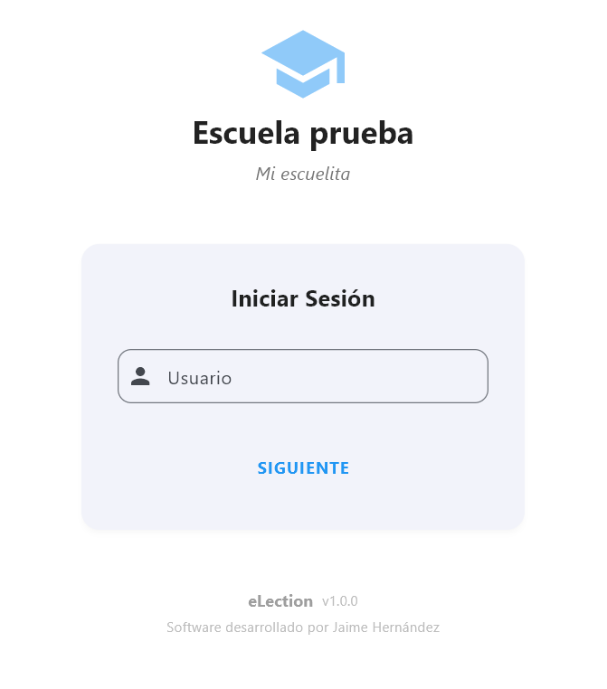
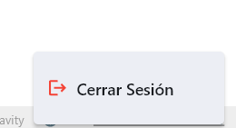
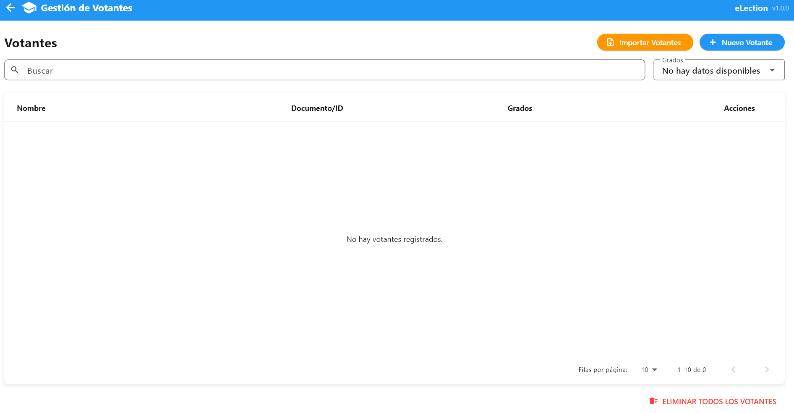
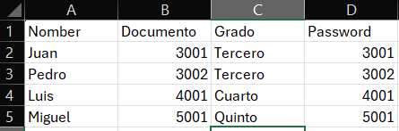
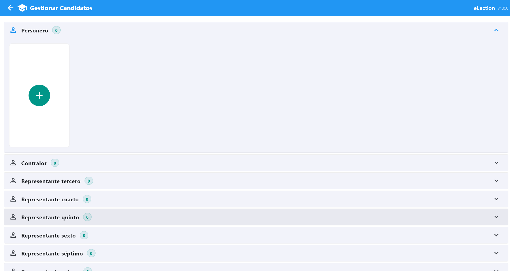
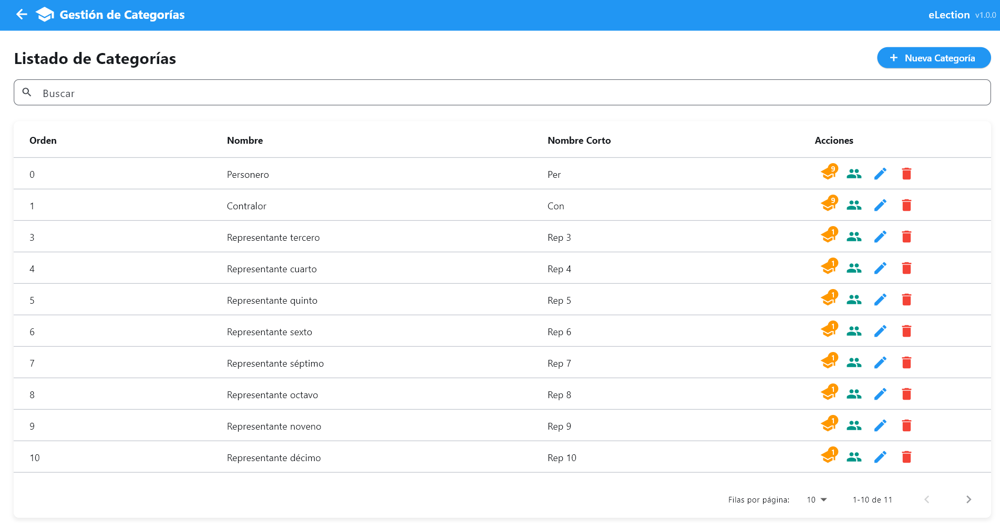
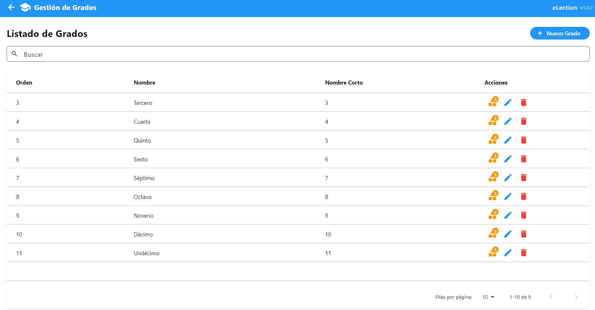
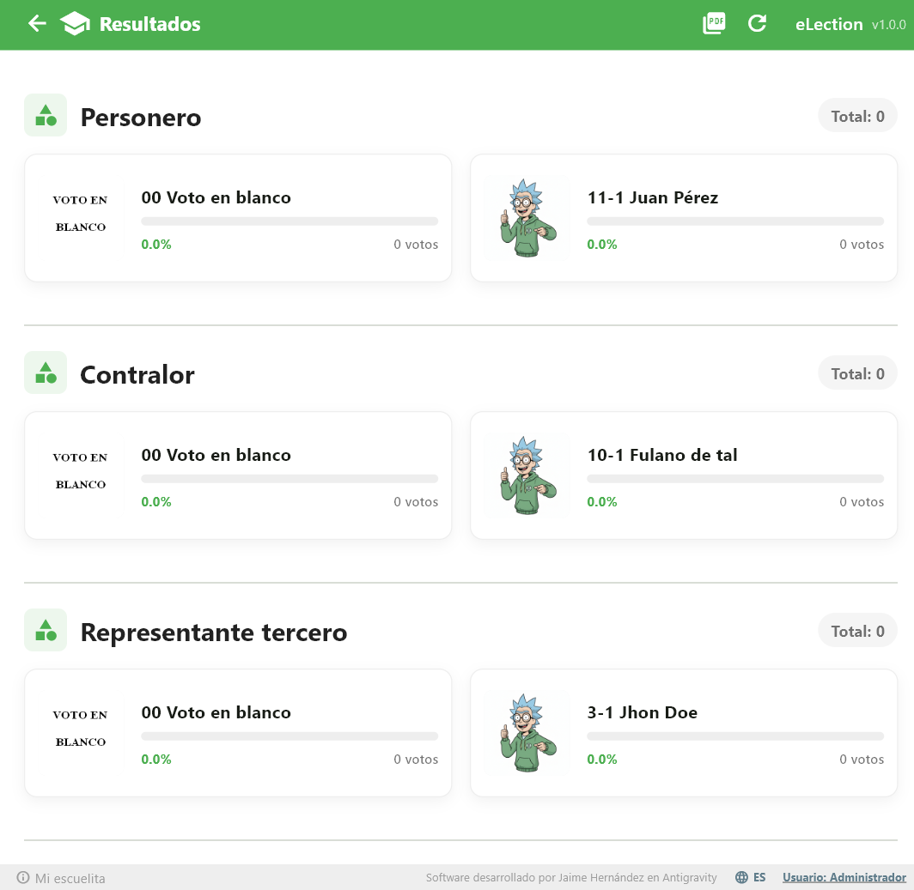

Índice de Contenidos
1. Introducción
↑ Volver al ÍndiceeLection Manual es un sistema de gestión de elecciones manuales diseñado para facilitar la organización y realización de procesos electorales. La plataforma permite a los administradores configurar elecciones, gestionar candidatos y votantes, mientras que los votantes pueden emitir su voto de manera sencilla a través de una interfaz intuitiva.
Panel de Administración
Configura elecciones, gestiona candidatos, categorías, grados y votantes desde un panel centralizado.
Interfaz de Votación
Interfaz simplificada para que los votantes emitan su elección de forma rápida y segura.
Multidioma
Soporte para múltiples idiomas incluyendo español e inglés.
Diseño Responsivo
Accede desde cualquier dispositivo: computadora, tablet o móvil.
2. Acceso al Sistema
↑ Volver al ÍndicePara acceder al sistema, los usuarios deben autenticarse mediante la pantalla de inicio de sesión.
2.1 Pantalla de Inicio de Sesión
La pantalla de inicio de sesión contiene los siguientes campos:
- Usuario: Nombre de usuario del administrador
- Contraseña: Contraseña de acceso

2.2 Proceso de Inicio de Sesión
Ingrese sus credenciales
Introduzca su nombre de usuario y contraseña en los campos correspondientes.
Click en "Iniciar Sesión"
Presione el botón para autenticarse en el sistema.
Acceda al Panel
Si las credenciales son correctas, será redirigido al panel de administración.
3. Panel de Administración
↑ Volver al ÍndiceEl panel de administración es el centro de control del sistema. Desde aquí puede acceder a todas las funciones de gestión.
3.1 Estructura del Panel
El panel incluye:
- Barra de navegación superior con acceso rápido
- Menú lateral con todas las opciones de configuración
- Área principal de trabajo
- Botón de cierre de sesión

3.2 Opciones del Menú
| Módulo | Descripción |
|---|---|
| Panel | Vista general del sistema |
| Votantes | Gestión de votantes registrados |
| Candidatos | Administración de candidatos |
| Categorías | Clasificación de elecciones (Presidente, Vice, etc.) |
| Grados | Niveles electorales (Grado 1, Grado 2, etc.) |
| Candidatos Relacionados | Asociar candidatos a elecciones |
| Grados Relacionados | Configurar grados por elección |
| Categorías Relacionadas | Asociar categorías a elecciones |
| Configuración | Configuración del sistema |

4. Gestión de Votantes
↑ Volver al ÍndiceEl módulo de Votantes permite administrar a todas las personas autorizadas para votar en las elecciones.

4.1 Agregar Nuevo Votante
Acceda al módulo Votantes
Desde el menú lateral, haga clic en "Votantes".
Click en "Agregar Votante"
Se abrirá el formulario de registro de nuevo votante.
Complete los datos requeridos
- Nombre: Nombre completo del votante
- Documento: Número de identificación
- Contraseña: Contraseña para acceder al sistema
- Grado: Grado o nivel electoral del votante
Guarde el registro
Click en "Guardar" para registrar al nuevo votante.

4.1.1 Importar Votantes desde Excel
También puede importar múltiples votantes de forma masiva utilizando un archivo Excel (.xlsx). El archivo debe tener la siguiente estructura:

Columnas requeridas:
- NAME: Nombre completo del votante
- DOCUMENT: Número de identificación único
- PASSWORD: Contraseña para acceder al sistema
- GRADE: Grado o nivel electoral (debe existir previamente en el sistema)
Prepare el archivo Excel
Cree un archivo .xlsx con los datos de los votantes siguiendo la estructura mostrada.
Seleccione el archivo
En el formulario de agregar votante, haga clic en el botón para seleccionar el archivo Excel.
Importe los datos
Los votantes serán importados automáticamente al sistema.
4.2 Lista de Votantes
La vista principal de Votantes muestra una tabla con todos los votantes registrados, incluyendo:
- Nombre
- Documento
- Grado
- Acciones (editar, eliminar)
5. Gestión de Candidatos
↑ Volver al ÍndiceEl módulo de Candidatos permite administrar los candidatos que participarán en las elecciones.

5.1 Agregar Nuevo Candidato
Acceda al módulo Candidatos
Desde el menú lateral, haga clic en "Candidatos".
Click en "Agregar Candidato"
Se abrirá el formulario de registro.
Complete la información del candidato
- Nombre: Nombre completo del candidato
- Imagen: Fotografía del candidato
- Información adicional: Datos relevantes
Guarde el candidato
Click en "Guardar" para registrar al candidato.
5.2 Lista de Candidatos
La vista muestra los candidatos con su fotografía, nombre e información relevante. Cada candidato puede ser:
- Editado para modificar sus datos
- Eliminado del sistema
- Asociado a elecciones específicas
6. Categorías
↑ Volver al ÍndiceLas categorías permiten clasificar los diferentes tipos de cargos o posiciones electorales (ej: Presidente, Vicepresidente, Secretario, Tesorero).

6.1 Crear Nueva Categoría
Acceda al módulo Categorías
Desde el menú lateral, haga clic en "Categorías".
Click en "Nueva Categoría"
Se abrirá el formulario de nueva categoría.
Ingrese el nombre de la categoría
Ejemplos: Presidente, Vicepresidente, Secretario, Vocal
Guarde la categoría
Click en "Guardar" para crear la categoría.

6.2 Grados Relacionados con Categoría
Desde el listado de Categorías, puede asociar grados directamente a una categoría específica. Esto permite definir qué grados podrán votar por los candidatos de esa categoría.

Acceda al módulo Categorías
Desde el menú lateral, haga clic en "Categorías".
Seleccione una categoría
Haga clic en el botón de acciones de la categoría a la que desea asociar grados.
Agregue los grados
Seleccione los grados que podrán votar por candidatos de esa categoría.
6.3 Candidatos Relacionados con Categoría
Desde el listado de Categorías, puede crear y visualizar los candidatos que se presentan por cada categoría, sin necesidad de acceder al módulo de Candidatos. Esto permite gestionar fácilmente los candidatos asociados a cada categoría electoral.

Acceda al módulo Categorías
Desde el menú lateral, haga clic en "Categorías".
Seleccione una categoría
Haga clic en el botón de acciones de la categoría para ver sus candidatos.
Agregue o gestione candidatos
Desde aquí puede agregar nuevos candidatos o gestionar los existentes para esa categoría.

7. Grados
↑ Volver al ÍndiceLos grados permiten definir niveles electorales. Por ejemplo, en una elección escolar: Grado 1, Grado 2, Grado 3, etc.

7.1 Crear Nuevo Grado
Acceda al módulo Grados
Desde el menú lateral, haga clic en "Grados".
Click en "Nuevo Grado"
Se abrirá el formulario de nuevo grado.
Ingrese el nombre del grado
Ejemplos: Grado 1, Grado 2, Primero, Segundo
Guarde el grado
Click en "Guardar" para crear el grado.

7.2 Categorías Relacionadas con el Grado
Desde el listado de Grados, puede asociar categorías directamente a un grado específico. Esto permite definir qué categorías estarán disponibles para cada nivel electoral.

Acceda al módulo Grados
Desde el menú lateral, haga clic en "Grados".
Seleccione un grado
Haga clic en el botón de acciones del grado al que desea asociar categorías.
Agregue las categorías
Seleccione las categorías que estarán disponibles para ese grado.
8. Configuración del Sistema
↑ Volver al ÍndiceEl módulo de Configuración permite personalizar la apariencia y configuración regional del sistema.

8.1 Configuración General
- Imagen de la organización: Logotipo o imagen de la organización
- Colores: Personalización de la paleta de colores
- Configuración Regional: Zona horaria y formato de fecha

8.1.1 Mantenimiento del Sistema
En la sección de Mantenimiento puede realizar las siguientes acciones:
Exportar/Importar Base de Datos
El sistema permite exportar la base de datos completa para su portabilidad en dispositivos sin conexión a internet. Esta función es útil cuando se necesita:
- Trabajar en equipos sin conexión a internet
- Respaldar los datos de las elecciones
- Transferir datos entre diferentes dispositivos
Exporte la base de datos
Genere un archivo de respaldo con todos los datos del sistema.
Transfiera el archivo
Copie el archivo exportado al dispositivo donde necesite trabajar.
Importe la base de datos
Cargue el archivo en el nuevo dispositivo para restaurar los datos.
Borrar Votos Actuales
Esta función permite eliminar todos los votos registrados actualmente. Es útil cuando se necesita usar el mismo PC para otra sesión de votaciones, por ejemplo:
- Mañana: Primera jornada de votación
- Tarde: Segunda jornada de votación
- Otro día: Nueva elección
Exporte los datos (opcional)
Si necesita guardar un registro de los votos, exporte la base de datos antes de borrarlos.
Acceda a Mantenimiento
En la sección de configuración, ingrese a Mantenimiento.
Borre los votos
Seleccione la opción para borrar todos los votos actuales y confirme la acción.
8.3 Configuración de Idioma
El sistema soporta múltiples idiomas. Para cambiar el idioma:

Acceda a Configuración
Desde el menú lateral, haga clic en "Configuración".
Seleccione el idioma
Elija entre los idiomas disponibles (Español, Inglés, etc.).
9. Resultados Electorales
↑ Volver al ÍndiceEl módulo de Resultados permite visualizar y exportar los datos de las votaciones de forma clara y exportable.
9.1 Visualización de Resultados
Desde esta sección puede ver en tiempo real los resultados de las elecciones:
- Total de votos por candidato
- Distribución de votos por categoría
- Participación por grado
- Porcentajes de votación


9.2 Exportar Resultados
El sistema permite exportar los resultados en diferentes formatos para su análisis y guardado:
Acceda a Resultados
Desde el menú lateral, haga clic en "Resultados".
Seleccione el formato de exportación
Elija el formato deseado (Excel, PDF, etc.).
Descargue el archivo
El archivo con los resultados se descargará automáticamente.
10. Interfaz de Votación
↑ Volver al ÍndiceLa interfaz de votación está diseñada para que los votantes puedan emitir su voto de forma sencilla e intuitiva.
10.1 Proceso de Votación
Pantalla de Bienvenida
Pantalla inicial con el mensaje de bienvenida y botón para comenzar a votar.

Selección de Grado
Elija su grado
El votante selecciona el grado al que pertenece de la lista de opciones disponibles.

Selección de Categoría
Elija la categoría de votación
Seleccione el cargo o posición por la cual desea votar (Presidente, Vicepresidente, etc.).
Elección del Candidato
Seleccione su candidato
Visualice los candidatos disponibles y seleccione el de su preferencia.

Confirmación del Voto
Confirme su elección
Revise su selección y confirme para registrar el voto.

10.2 Flujo del Votante
| Paso | Acción | Descripción |
|---|---|---|
| 1 | Bienvenida | Pantalla inicial |
| 2 | Selección de Grado | Elige su nivel/grado |
| 3 | Selección de Categoría | Elige el cargo |
| 4 | Selección de Candidato | Elige al candidato |
| 5 | Confirmación | Voto registrado |
Información Adicional
↑ Volver al ÍndiceSoporte Técnico
Para consultas técnicas, contacte al administrador del sistema.
Seguridad
Mantenga sus credenciales seguras y cierre sesión al terminar.
Recomendaciones
Verifique toda la información antes de confirmar operaciones irreversibles.